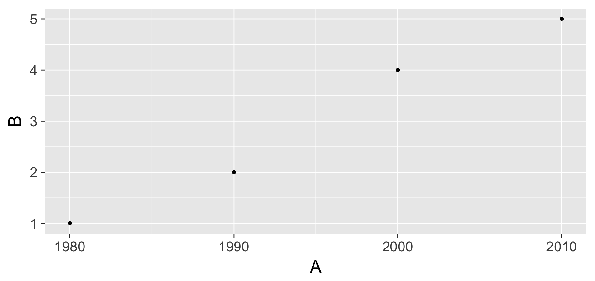
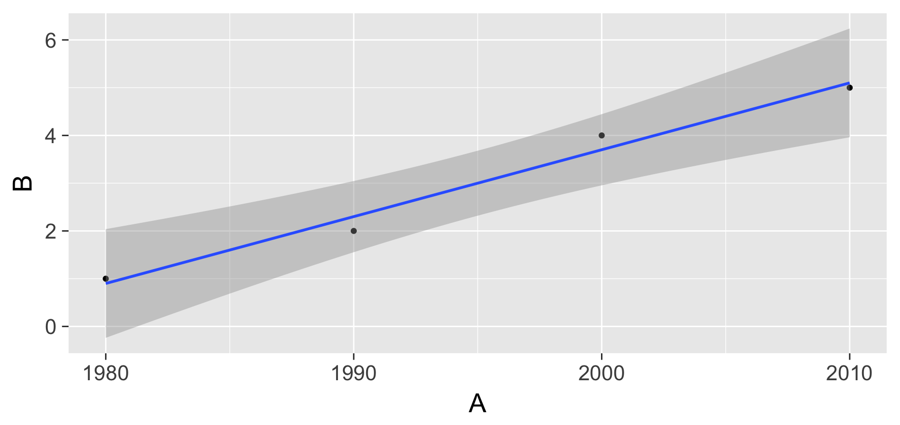
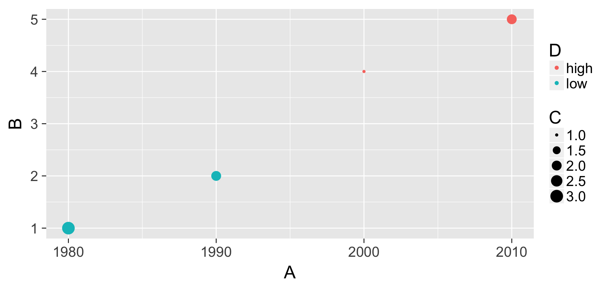
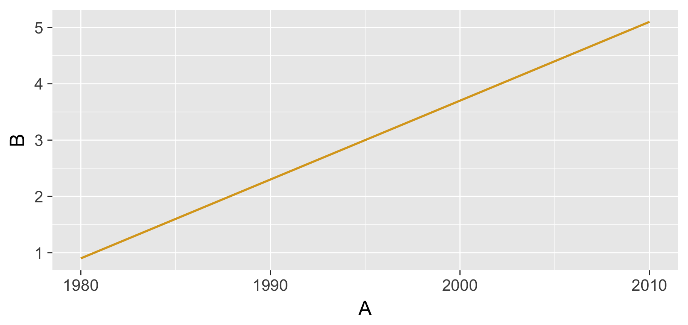

1 The gRammar of gRaphics with ggplot2
In this section, we’ll discuss the Grammar of Graphics developed by Leland Wilkinson and implemented in R via Hadley Wickham. We’ll see how this is applied to a scatterplot with and without a regression line. These ideas will then be extended in Part 2 of the workshop.
1.1 The Grammar of Graphics
- What are the variables here?
- What is the observational unit?
- i.e., what is the THING being measured?
- How are the variables mapped to aesthetics?
What is a statistical graphic?
A
mappingofdatavariables
to
aes()thetic attributes
of
geom_etric objects.
1.2 Back to basics
Consider the following data in tidy format:
simple_ex <-
data_frame(
A = c(1980, 1990, 2000, 2010),
B = c(1, 2, 4, 5),
C = c(3, 2, 1, 2),
D = c("low", "low", "high", "high")
)
simple_ex- Sketch the graphics below on paper, where the
x-axis is variableAand they-axis is variableB
- A scatterplot
- A scatterplot with fitted least-squares regression line
Intermediate folks:
- A scatter plot where the
colorof the points corresponds toDand thesizeof the points corresponds toC
- A scatter plot where the
- Only show a regression line of color “goldenrod” (no points and also no error bounds)
- A scatterplot
ggplot(data = simple_ex, mapping = aes(x = A, y = B)) +
geom_point()
- A scatterplot with fitted least-squares regression line
ggplot(data = simple_ex, mapping = aes(x = A, y = B)) +
geom_point() +
geom_smooth(method = "lm")
Intermediate
- A scatter plot where the
colorof the points corresponds toDand thesizeof the points corresponds toC
ggplot(data = simple_ex, mapping = aes(x = A, y = B)) +
geom_point(mapping = aes(color = D, size = C))
- Only show a regression line of color “goldenrod” (no points and also no error bounds)
ggplot(data = simple_ex, mapping = aes(x = A, y = B)) +
geom_smooth(method = "lm", se = FALSE, color = "goldenrod")
1.3 Your Task
Recreate the gapminder plot shown at the beginning of this workshop (and below) using ggplot2 and the gapminder data frame in the gapminder package. The Data Visualization Cheat Sheet from RStudio may be helpful.
Note: To focus on only the rows in the data frame corresponding to 1992 we use the filter function from dplyr that we will discuss in Part 3 of this workshop/book.